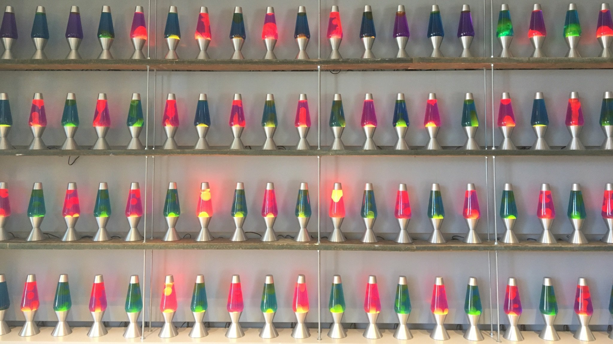

{
const critical = VM.distributions.chiSquaredQuantile(0.95, 3)
const fig = rejectionFigure(x => VM.distributions.chiSquaredPdf(x, 3), 0, 20, [[critical, 20]], [critical])
return chiPlot(fig.traces, {
title: {text: "Chi-square pdf with 3 degrees of freedom"}, margin: {t: 40}, showlegend: false,
xaxis: {title: "x"}, yaxis: {title: "pdf", rangemode: "tozero"}, shapes: fig.shapes,
annotations: [{x: critical, y: 0.05, xanchor: "left", text: ` Critical value for 5% significance: ${critical.toFixed(2)}`, showarrow: false}]
})
}Random Number Generators
In the problem of estimating the value of \(\pi\) using a Monte Carlo method, we encountered three fundamental principles that underpin all Monte Carlo simulations:
Random Number Generation All Monte Carlo simulations require a source of random numbers. In our \(\pi\) estimation example, we used
np.random.uniform()to generate uniformly distributed random coordinates. The choice of random number generator is crucial and can significantly impact simulation quality—a poor random number generator can introduce bias and lead to unreliable results.Sampling from Target Distributions Our simulation effectively generated samples from a distribution \(X_N\) (more precisely, samples from the probability density function of \(X_N\)) whose expected value is \(\pi/4\). This exemplifies a core Monte Carlo principle: we construct and sample from distributions whose statistical properties (mean, variance, or other moments) correspond to the quantities we wish to estimate.
Uncertainty Quantification Beyond computing point estimates, we must quantify the uncertainty in our results. Large uncertainties indicate that additional simulation runs are needed to achieve reliable estimates. This uncertainty analysis is essential for determining the statistical significance of our Monte Carlo results.
These three principles form the foundation of Monte Carlo methodology and will resurface throughout our exploration of more sophisticated simulation techniques. We begin our deeper investigation with the first principle: the generation and properties of random numbers.
Pseudo-random number generators
A random number generator is a function that produces a sequence of numbers that meet certain statistical requirements for randomness. True random number generators are based on physical processes that are fundamentally random, such as radioactive decay or thermal noise. Such systems are useful in cryptography and other applications where true randomness is important for security.
Below is an example of a true random number generator based on lava lamps called the “wall of entropy”. The lava lamps are used to generate random bits, which are then combined to generate random keys for encryption.

There are less exotic ways to generate random numbers. Computer chips have a hardware random number generator that uses thermal noise to generate random bits.
However, true random number generators are slow and expensive. These are not useful for simulations as they are not reproducible. Instead, we use pseudo-random number generators (PRNGs) to generate random numbers for simulations.
NoteReproducibility in Simulations
A pseudo-random number generator (PRNG) is a random number generator that produces a sequence of numbers that are not truly random, but are generated by a deterministic algorithm. The sequence of numbers produced by a PRNG is completely determined by the seed: if you know the seed, you can predict the entire sequence of numbers.
The reason for using PRNGs in simulations is to be able to reproduce the results. If you run a simulation with a given seed, you should get the same results every time. This is important for testing, debugging, and for sharing results with others.
We test the quality of a PRNG by running statistical tests on the sequence of numbers it generates. A good PRNG should produce numbers that are indistinguishable from true random numbers. It is said to fool the statistical tests of randomness.
PRNGs need to satisfy several statistical requirements to be useful in simulations. The most important requirements are:
- Uniformity: The numbers generated should be uniformly distributed between 0 and 1.
- Independence: The numbers generated should be independent of each other. Knowing one number should not give you any information about the next number.
- Speed: The PRNG should be fast. Generating random numbers is a common operation in simulations, so the PRNG should be as fast as possible.
Warning
These are all difficult requirements to satisfy simultaneously. In practice, most PRNGs are imperfect. You have to choose a PRNG that is appropriate for your application. You have to decide which statistical tests of randomness are most important for your application, and choose a PRNG that satisfies those tests.
For example:
Linear congruential generators are simple and fast, but they have some statistical problems, as you’ll see in the exercises. These are good enough if you only need a few random numbers. These were the first PRNGs to be widely used and have stayed popular for a long time because of their simplicity.
The Mersenne Twister is a widely-used PRNG that is fast and has good statistical properties. It is the default PRNG in many programming languages, including Python. However, it is not suitable for cryptographic applications.
Cryptographically secure PRNGs are designed to be secure against cryptographic attacks. They are slower than other PRNGs, but they are necessary for applications where security is important.
Cycle length
In practice, PRNGs generate a random integer between 0 and \(M\) for some large number \(M\), and then divide by \(M\) to get a random number between 0 and 1. The period or cycle length of a PRNG is the number of random numbers it can generate before it starts repeating itself. A good PRNG should have a long cycle length.
WarningCycle Length ≠ Quality
Relying solely on the cycle length to determine the quality of a PRNG is a mistake. A PRNG can have a long cycle length and still have poor statistical properties. For example, a PRNG that generates the sequence
\[1, 2, 3, 4, 5, \ldots, M-1, M, 1, 2, 3, 4, 5,\]
has a cycle length of \(M\), but it is a terrible PRNG!
Linear Congruential Generator
A linear congruential generator (LCG) is an algorithm that yields a sequence of pseudo-randomized integers using a simple recurrence relation. The generator is defined by the recurrence relation:
\[\begin{equation} X_{n+1} = (aX_n + c) \mod m \end{equation}\]
where: - \(X_n\) is the sequence of pseudo-randomized numbers - \(a\) is the multiplier - \(c\) is the increment - \(m\) is the modulus
The above equation generates a sequence of integers between 0 and \(m-1\). To generate a sequence of random numbers between 0 and 1, we divide the sequence by \(m\):
\[\begin{equation} r_n = \frac{X_n}{m} \end{equation}\]
LCGs are simple to implement and are computationally efficient. However, as you’ll see in the homework, they have some statistical problems. The modulus \(m\) is the largest integer that the generator can produce. The modulus \(m\) is usually a power of 2, which makes the modulo operation fast.
TipHull-Dobell Theorem
The Hull-Dobell Theorem states that an LCG will have a full period for all seed values if and only if:
- \(c\) and \(m\) are relatively prime,
- \(a - 1\) is divisible by all prime factors of \(m\),
- \(a - 1\) is a multiple of 4 if \(m\) is a multiple of 4.
In the special case when \(m\) is a power of 2, the Hull-Dobell Theorem simplifies to:
- \(c\) is odd,
- \(a\) is congruent to 1 modulo 4.
It is in fact enough to take \(c = 1\). Thus when the modulus is a power of 2, a full period LCG will be of the form:
\[\begin{equation} X_{n+1} = (aX_n + 1) \mod 2^b, \end{equation}\]
with \(a \equiv 1 \mod 4\).
Statistical test of randomness
As mentioned earlier, we test the quality of a PRNG by running statistical tests on the sequence of numbers it generates. The more tests a PRNG passes, the better it is. There exist many “test suites” that are used to evaluate the quality of PRNGs such as the Diehard tests, the TestU01 suite, and the NIST Statistical Test Suite.
We’ll look at the following three simple statistical tests of randomness from the NIST Statistical Test Suite:
Chi-square test: The chi-square test checks whether the observed frequency of the sequence is consistent with the expected frequency. If the sequence is truly random, then the observed frequency should be consistent with the expected frequency.
Mono-bit test: The mono-bit test checks whether the number of 0s and 1s in the sequence is approximately equal. If the sequence is truly random, then the number of 0s and 1s should be roughly equal.
Runs test: The runs test checks whether the number of runs of 0s and 1s in the sequence is consistent with a random sequence. A run is a sequence of consecutive 0s or 1s. If the sequence is truly random, then the number of runs of 0s and 1s should be consistent with a random sequence.
NoteHypothesis Testing Framework
For each of these tests, we’ll set up the null hypothesis and the alternative hypothesis as:
- \(H_0\): The sequence is random.
- \(H_1\): The sequence is not random.
We’ll use the p-value to determine whether to reject the null hypothesis. If the p-value is less than the significance level \(\alpha\), we reject the null hypothesis. If the p-value is greater than \(\alpha\), we fail to reject the null hypothesis.
Chi-square test
The chi-square test is a one-sided statistical test that measures how well a sample of data matches a theoretical distribution. The chi-square test is used to test whether the observed data is consistent with the expected data. The test statistic is given by:
\[\begin{equation} \chi^2 = \sum_{i=1}^k \frac{(O_i - E_i)^2}{E_i} \end{equation}\]
where: - \(O_i\) is the observed frequency of the \(i\)-th bin - \(E_i\) is the expected frequency of the \(i\)-th bin - \(k\) is the number of bins
In our case of testing the randomness of a sequence of random numbers, we divide the interval \([0, 1]\) into \(k\) bins and count the number of random numbers that fall into each bin. The expected frequency of each bin is \(n/k\), where \(n\) is the total number of random numbers.
The chi-square test is used to test the null hypothesis that the observed data is consistent with the expected data. If the chi-square test statistic is large, then the null hypothesis is rejected.
The critical value of the chi-square test statistic depends on the number of degrees of freedom. The degrees of freedom is given by \(k-1\). In Python, scipy.stats.chi2.ppf computes this critical value.
WarningChoosing the Number of Bins
The chi-square test is sensitive to the number of bins \(k\). If \(k\) is too small, then the test may not be sensitive enough to detect deviations from the expected distribution. If \(k\) is too large, then the test may be too sensitive and may detect deviations that are not significant.
Mono-bit test
The mono-bit test is a two-sided statistical test that checks whether the number of 0s and 1s in the sequence is approximately equal. In a uniform binary sequence, roughly half the bits are 0s and half the bits are 1s.
Let \(X_i\) be the \(i\)-th bit in the sequence. Then \(X_i\) is a Bernoulli random variable with probability \(p = 0.5\). Because the random variables \(X_i\) are independent and identically distributed, by the central limit theorem, their average
\[\begin{equation} \bar{X} = \dfrac{X_1 + X_2 + \cdots + X_k}{k} \end{equation}\]
approaches a normal distribution with mean \(0.5\) and variance \(1/(4k)\) as \(k\) approaches infinity. We can hence use the z-test to test the null hypothesis that the sequence is random. The z-test statistic is given by
\[\begin{equation} Z = \dfrac{\bar{X} - 0.5}{\sqrt{1/(4k)}} \end{equation}\]
NoteTwo-Sided Test
Note that because this is a two-sided test, we reject the null hypothesis if \(Z > z_{\alpha/2}\) or \(Z < -z_{\alpha/2}\) where \(z_{\alpha/2}\) is the critical value of the z-test statistic at the significance level \(\alpha/2\).
In Python, you can use the scipy.stats.norm.ppf function to compute the critical values for the z-test.
To find the critical value, we find \(x\) such that \(P(-x < X < x) = 0.95\) for a standard normal distribution. In the figure below, this is the area between the green dashed lines. If your z-score is outside of the critical values, you can reject the null hypothesis.
Runs test
The Wald-Wolfowitz runs test is a two-sided statistical test that checks whether the number of runs of 0s and 1s in the sequence is consistent with a random sequence. A run is a sequence of consecutive 0s or 1s. In a random sequence, the number of runs of 0s and 1s should be consistent with a random sequence.
TipExample
In the sequence 0011100110, there are 5 runs: 00, 111, 00, 11, 0. The runs test checks whether the number of runs of 0s and 1s is consistent with a random sequence.
Consider a binary sequence of length \(k\). Define a random variable
\[\begin{equation} Z_i = \begin{cases} 1 & \text{if the $(i+1)^{\text{st}}$ bit is different from the $i^{\text{th}}$ bit} \\ 0 & \text{otherwise} \end{cases} \end{equation}\]
One can check that the number of runs in the sequence is given by the random variable
\[\begin{equation} R = 1 + \sum_{i=1}^{k-1} Z_i \end{equation}\]
Note that the random variables \(Z_i\) are independent. Hence,
\[\begin{align} \text{E}[R] &= 1 + \sum_{i=1}^{k-1} \text{E}[Z_i] \\ \text{Var}[R] &= \sum_{i=1}^{k-1} \text{Var}[Z_i] \end{align}\]
Note
The calculation of this expectation and variance is left as an exercise.
We assume that for large \(k\) the number of runs is approximately normally distributed. We can hence use the z-test to test the null hypothesis that the sequence is random. The z-test statistic is given by
\[\begin{equation} Z = \dfrac{R - \text{E}[R]}{\sqrt{\text{Var}[R]}} \end{equation}\]
We reject the null hypothesis if \(Z > z_{\alpha/2}\) or \(Z < -z_{\alpha/2}\) where \(z_{\alpha/2}\) is the critical value of the z-test statistic at the significance level \(\alpha/2\). Note that here we use \(\alpha/2\) instead of \(\alpha\) because this is a two-sided test.
Kolmogorov-Smirnov test
The Kolmogorov-Smirnov (KS) test is a non-parametric statistical test that checks whether a sample follows a specified probability distribution by comparing the empirical distribution function with the theoretical cumulative distribution function. For RNG testing, we typically test whether the generated numbers follow a uniform distribution on [0,1].
Given a sample \(U_1, U_2, \ldots, U_n\), the empirical distribution function (EDF) is defined as:
\[\begin{equation} F_n(x) = \frac{1}{n} \sum_{i=1}^{n} \mathbf{1}_{U_i \leq x} \end{equation}\]
where \(\mathbf{1}_{U_i \leq x}\) is the indicator function that equals 1 if \(U_i \leq x\) and 0 otherwise. The EDF represents the proportion of sample values that are less than or equal to \(x\), creating a step function that jumps by \(1/n\) at each observed data point.
TipExample: Constructing the Empirical CDF
Consider the sequence 0.23, 0.67, 0.12, 0.89, 0.45. First, we order the values: 0.12, 0.23, 0.45, 0.67, 0.89.
The empirical CDF is a step function that jumps by 0.2 at each point:
- \(F_5(x) = 0.2\) for \(0.12 \leq x < 0.23\)
- \(F_5(x) = 0.4\) for \(0.23 \leq x < 0.45\)
- \(F_5(x) = 0.6\) for \(0.45 \leq x < 0.67\)
- And so on…
For a uniform distribution on [0,1], the theoretical CDF is \(F(x) = x\).
The KS test statistic measures the maximum absolute difference between the empirical and theoretical distribution functions:
\[\begin{equation} D_n = \sup_{x} |F_n(x) - F(x)| \end{equation}\]
where \(F(x)\) is the theoretical CDF under the null hypothesis. For computational purposes, we don’t need to check every possible value of x x. Since the empirical distribution function is a step function that only changes at the observed data points, it suffices to check the maximum difference at each of the sample values. Let \(U_{(1)} \leq U_{(2)} \leq \cdots \leq U_{(n)}\) be the order statistics. It is enough to compare the values:
\[\begin{equation} \frac{i}{n} - F(U_{(i)}), \text{ and } F(U_{(i)}) - \frac{i-1}{n} \end{equation}\]
The first term \(\frac{i}{n} - F(U_{(i)})\) measures the “positive deviation” (empirical CDF above theoretical), while the second term \(F(U_{(i)}) - \frac{i-1}{n}\) measures the “negative deviation” (empirical CDF below theoretical).
Under the null hypothesis that the sample follows the specified continuous distribution \(F(x)\), the test statistic \(D_n\) follows the Kolmogorov distribution asymptotically. This remarkable result shows that as \(n \to \infty\), the distribution of \(\sqrt{n}D_n\) converges to a distribution that is independent of the specific form of \(F(x)\), making the KS test truly distribution-free.
NoteTheorem: Kolmogorov’s Result
Under \(H_0\), as \(n \to \infty\), the distribution of \(\sqrt{n}D_n\) converges to the Kolmogorov distribution with CDF: \[K(z) = 1 - 2\sum_{j=1}^{\infty} (-1)^{j-1} e^{-2j^2z^2}\]
For hypothesis testing, we reject the null hypothesis \(H_0\) (that the sample follows the specified distribution) if \(D_n > D_{\alpha}\) where \(D_{\alpha}\) is the critical value at significance level \(\alpha\). For large \(n\), the critical value can be approximated as:
\[\begin{equation} D_{\alpha} \approx \sqrt{-\frac{1}{2n} \ln\left(\frac{\alpha}{2}\right)} \end{equation}\]
Common approximations include \(D_{0.05} \approx \frac{1.36}{\sqrt{n}}\) for 5% significance level and \(D_{0.01} \approx \frac{1.63}{\sqrt{n}}\) for 1% significance level.
The KS test assumes the theoretical distribution is completely specified (no parameters estimated from data) and works best for detecting differences in location and scale. For small samples (\(n < 30\)), exact critical values should be used instead of asymptotic approximations.
Spectral test
The previous tests fail to detect some of the problems with generating vectors using LCGs. One test for detecting these problems is the spectral test. The spectral test uses the Fast Fourier Transform (FFT) to analyze the spectral properties of the sequence. This test is beyond the scope of this class but you can see some examples in the homework.
Tip
This would be a good topic for a project!
Final remarks
Note that by definition, a PRNG is not “random” in an absolute sense. The PRNG used in Python, the Mersenne Twister, is sufficiently random for most applications involving simulations. However, it is not suitable for cryptographic applications as it is possible to predict the entire sequence of numbers if you know a limited set of numbers.
ImportantCryptographic Security
For cryptographic applications, you should use a cryptographically secure PRNG whose future numbers cannot be predicted easily from past numbers.